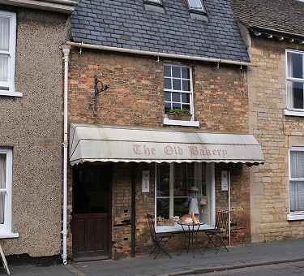

Good Old' Bakery began as a neighborhood bakehouse built around patient hands, warm ovens, and recipes passed from one family table to the next. Every morning, our bakers prepare breads, cakes, and pastries with the same care that filled the first shop with the smell of butter, flour, and fresh coffee.
We believe baked goods should feel familiar before the first bite. From soft loaves to celebration cakes, every item is made to carry the comfort of old-fashioned baking into everyday moments.